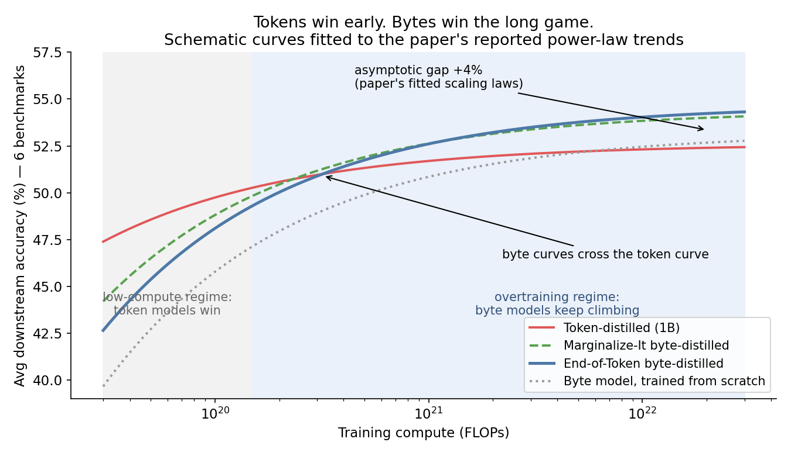
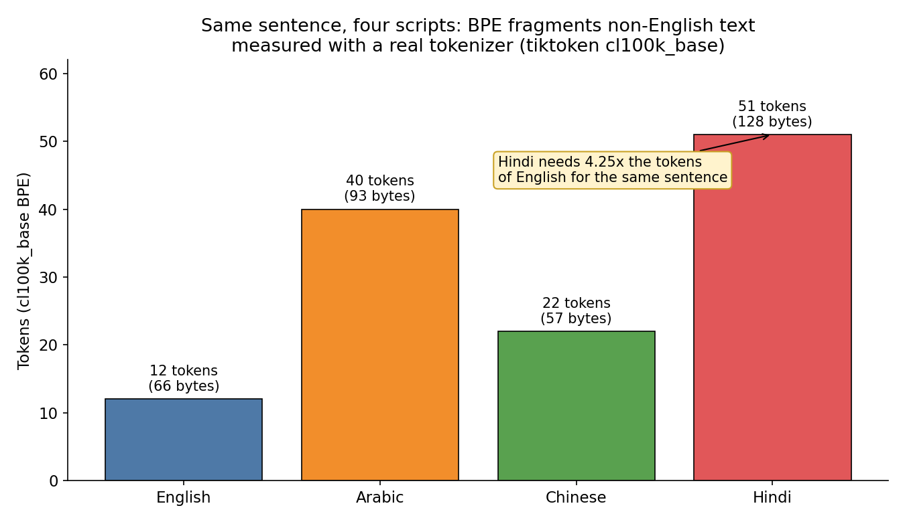
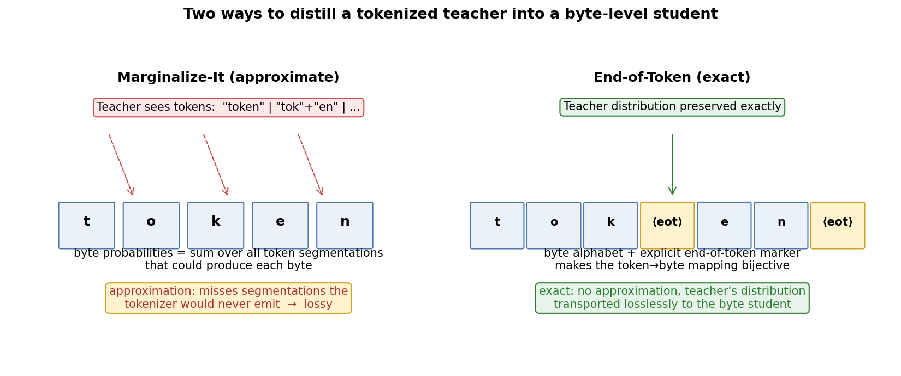
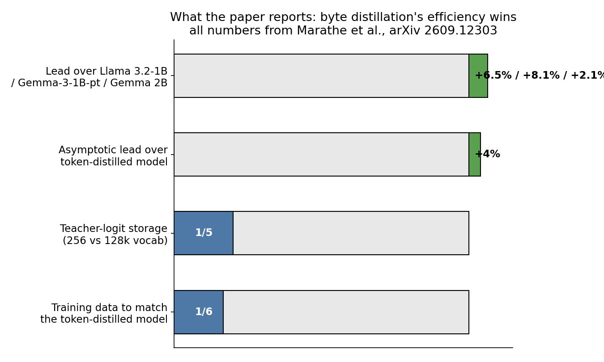

Every language model you've ever used has a secret: before it reads your prompt, a tokenizer chops it into chunks. "Tokenization" becomes ["Token", "ization"]. Hindi becomes confetti. Chinese becomes sawdust. This chopping step is treated as settled infrastructure — as permanent as the transformer itself.
A September 2026 paper from the University of Washington and Meta FAIR says it's a crutch. Their finding: tokenized models sprint ahead early in training, then plateau. Byte-level models — models that read raw bytes, no tokenizer at all — start slower and keep climbing. Distill a 1B byte-level student from a tokenized Llama 3-8B teacher with the right conversion, and the fitted scaling laws put it 4% ahead of the distilled token model at the compute asymptote, while needing 1/6th the training data and 1/5th the teacher-logit storage. The catch: the headline wins live in extrapolated scaling curves, not in today's checkpoints. Let's separate the proven from the projected.
ELI5: the alphabet vs. the Lego set
Imagine teaching a child to read two ways. The token way: hand them a box of 128,000 pre-glued word-chunks ("the", "ing", "Ġtoken") and tell them to assemble meaning from chunks. Fast to get going — most English text is already in the box. The byte way: hand them 256 letters (every possible byte) and make them learn that "t"+"o"+"k"+"e"+"n" spells a word. Painfully slow at first. But the byte child learns how letters combine, so nothing is ever out of vocabulary — a typo, a new emoji, Hindi, Arabic, all just more letters.
The pre-glued chunks have a hidden tax. I measured it this week with a real BPE tokenizer (tiktoken's cl100k_base) on the same sentence in four scripts:

English needs 12 tokens. Hindi needs 51 — 4.25x as many for the same meaning. Arabic needs 40. At per-token API pricing, a Hindi user pays 4x the English user for the same sentence. The tokenizer is English-shaped, and everyone else pays the difference. A byte model charges by the byte: 66 bytes for English, 128 for Hindi — a 1.9x ratio that reflects actual information content, not tokenizer favoritism.
How it works: the teacher speaks tokens, the student speaks bytes
The paper's real question is narrower and more practical than "are bytes better": can you distill a byte-level student from a big tokenized teacher? This matters because all the good teachers — Llama 3, Qwen, Gemma — are tokenized. If byte students can't learn from them, byte pretraining starts from zero.
The hard part is the conversion. The teacher outputs probabilities over 128,000 tokens. The student needs probabilities over 256 bytes. A token like "tokenizer" spans 9 bytes — so one token probability has to be split across 9 byte positions, and one byte position can be reached through many token paths ("token"+"izer", "tok"+"enizer", "tokenizer" whole...). The paper gives two converters, shown in Diagram 3:

Marginalize-It (approximate): for each byte, sum the teacher's probability over every token segmentation that could produce it. The problem: it sums over segmentations the tokenizer would never actually emit, so the conversion is lossy — like reconstructing a recipe from the smell alone.
End-of-Token (exact): add one symbol to the byte alphabet — an explicit end-of-token marker ⟨eot⟩. Now the token→byte mapping is bijective: every tokenization corresponds to exactly one byte+⟨eot⟩ sequence, so the teacher's full distribution transports to the student with zero approximation loss. 256 bytes + 1 marker = a 257-symbol vocabulary, versus 128,000 tokens.
The students are parameter-matched 1B models trained on up to 1 trillion bytes against a Llama 3-8B teacher, evaluated on six downstream benchmarks (ARC-Easy, ARC-Challenge, HellaSwag, PIQA, MBPP, Natural Questions) plus two more in the full eval.
The state of the art: what the numbers actually say
The fitted power laws tell a clean story across training FLOPs, validation bits-per-byte, and downstream accuracy:
- Token-distilled students lead at low compute, then flatten. The tokenizer is genuinely useful scaffolding early on.
- Byte-distilled students cross the token curve as compute grows and keep climbing where token models saturate.
- End-of-Token beats Marginalize-It by 1.9% at the asymptote — exactness pays.
- End-of-Token leads the distilled token model by 4% at the asymptote, and leads open-weight 1B–2B models by up to 6.5% (Llama 3.2-1B), 8.1% (Gemma-3-1B-pt), and 2.1% (Gemma 2B) on averaged downstream tasks.
- Efficiency is the sleeper result: the byte student matches the distilled token model on 1/6th the training data, and the 256-entry vocabulary cuts teacher-logit storage to 1/5th — distillation runs get cheaper to store and replay.

Three honest caveats, because this is where most coverage goes wrong:
- The viral thread was wrong about what's new. A September X thread presented Meta's Byte Latent Transformer as a brand-new breakthrough. BLT is from December 2024. The new paper is this distillation study — same research lineage (five authors overlap), different contribution. The byte-scaling story is a trend across papers, not one eureka.
- The biggest wins are extrapolations. The paper's headline gaps come from fitted scaling laws extended past the compute actually tested. At today's trained checkpoints, the byte models are competitive, not dominant. Treat the asymptote as a forecast with error bars, not a result.
- The teacher is still tokenized. This is distillation from token models, not proof that token-free pretraining at frontier scale works. The student inherits the teacher's knowledge; nobody has shown a byte model learning everything from scratch at 70B+ scale.
Takeaways
- Tokenization is a performance ceiling, not just plumbing. It plateaus models early and taxes non-English languages 2–4x. If you serve multilingual users, your tokenizer is a pricing decision.
- Distillation is the bridge. You don't need to abandon your tokenized teachers — End-of-Token conversion moves their knowledge into byte students losslessly, on 1/6th the data.
- The playbook for going byte: small model + long training budget + multilingual workload. That's exactly where the scaling laws say bytes win. Short-budget English-only training? Keep your tokenizer.
- Watch the compute crossover, not the hype. Byte models lose at the budgets most teams train at today and win where the curves cross. The strategic question is where your training budget sits relative to that crossing point — and it's moving left as methods improve.
The tokenizer had a 10-year run as unquestioned infrastructure. It earned it. But "the way we've always done it" is not a scaling law — and now we have the scaling laws.
Paper: Marathe et al., "Breaking the Token Ceiling: Distilling Smaller, Stronger Byte Models," arXiv 2609.12303 (Sep 11, 2026). Fertility measurements mine, via tiktoken cl100k_base. Scaling curves in Diagram 1 are schematics fitted to the paper's reported trends — asymptote gaps are the paper's numbers; crossover placement is illustrative.